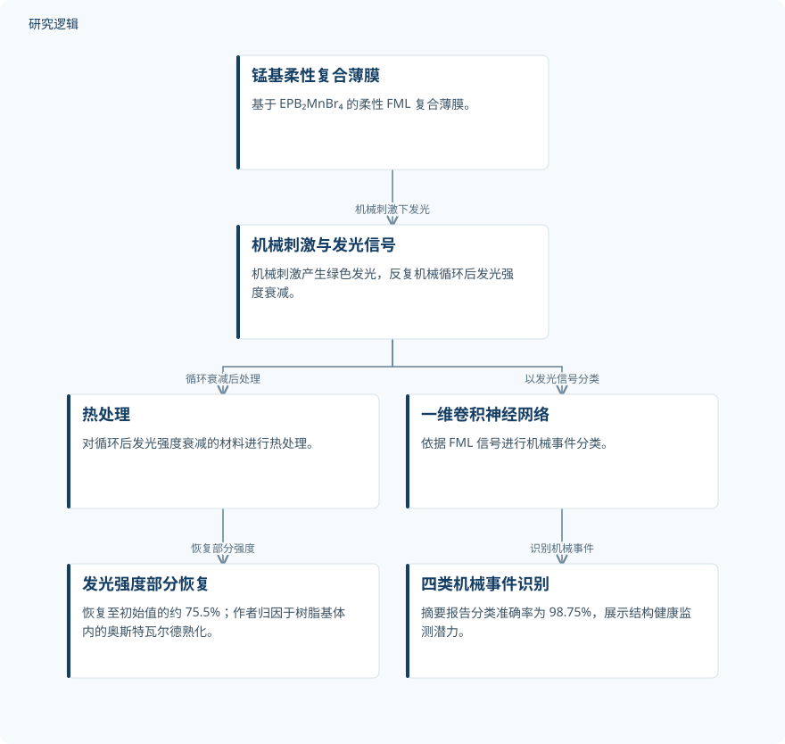

摘要解读
用于抗疲劳结构健康监测的锰基杂化卤化物热恢复型断裂力致发光
Thermally Recoverable Fracto‐Mechanoluminescence in Manganese‐Based Hybrid Halides for Fatigue‐Resistant Structural Health Monitoring
解读更新 2026-11-10 17:22 · 依据公开摘要整理，未核验全文细节
机械刺激下能够发光的材料，如何应对反复受力后的信号衰减？这项研究将锰基杂化卤化物柔性薄膜的热恢复能力与发光信号分类结合，为理解可恢复传感材料及其结构健康监测潜力提供了一个具体案例。
文章目录
反复受力后的发光衰减，限制持续感知
断裂机械发光（FML）材料具有用于交互式光电系统的潜力，但摘要指出，这类材料通常会在长期循环应力下发生不可逆的疲劳退化，限制实际应用。本文关注的不只是材料能否受到机械刺激而发光，还包括发光强度衰减后能否恢复，以及信号能否用于识别机械事件。
柔性发光薄膜与一维卷积网络结合
作者设计了基于锰基杂化卤化物 EPB₂MnBr₄ 的柔性 FML 复合薄膜，其中 EPB 为乙基三苯基膦鎓。研究通过热处理恢复反复机械循环后衰减的发光强度，并开发了一维卷积神经网络，依据 FML 信号对机械事件进行分类，面向矿业结构健康监测应用。
依据摘要整理的发光恢复与事件识别示意


概括柔性复合薄膜的机械发光、热恢复及信号分类关系；这是摘要示意图，不是论文原图。
下载 SVG图示关系说明
实线表示相邻阶段的信息流，虚线表示跨阶段联系或反馈。
锰基柔性复合薄膜 → 机械刺激与发光信号：机械刺激下发光；机械刺激与发光信号 → 热处理：循环衰减后处理；热处理 → 发光强度部分恢复：恢复部分强度；机械刺激与发光信号 → 一维卷积神经网络：以发光信号分类；一维卷积神经网络 → 四类机械事件识别：识别机械事件
热处理恢复部分发光强度，信号支持事件分类
摘要报告，复合薄膜在机械刺激下呈现强烈的绿色发光。反复机械循环导致强度下降后，热处理可使其恢复至初始值的约 75.5%。作者将这一恢复现象归因于所用树脂基体内的奥斯特瓦尔德熟化。这里的结果是部分发光强度恢复，不能等同于材料完全恢复到初始状态。
在信号识别方面，一维卷积神经网络对四类机械事件的分类准确率达到 98.75%，展示了机器学习识别 FML 信号模式的能力。这一结果支持其用于结构健康监测的潜力，但摘要并未将其表述为已经完成矿业现场长期可靠运行的验证。
恢复的持续性与分类的泛化范围仍待核对
仅凭摘要，无法判断材料样本数量、机械循环条件、热处理温度与时间，以及多次衰减—恢复后的性能变化；也无法核对奥斯特瓦尔德熟化归因的具体证据。因此，约 75.5% 的恢复水平不能直接推广为不同使用条件下的稳定表现。
分类结果同样需要结合全文理解：摘要未交代四类事件的具体定义、数据规模、训练与测试划分、比较模型或跨工况验证范围。上述信息在摘要中未报告，不代表论文没有开展相关工作；现有资料也不足以判断模型在实际矿业环境中的泛化能力。
阅读启发：区分材料恢复与识别可靠性
阅读启发：本文值得关注的是材料信号可恢复性与机器学习识别之间的联系，而不是将发光强度恢复直接视为结构疲劳寿命得到改善。进一步阅读时，可重点核对热恢复前后信号特征是否变化，以及分类准确率是否覆盖这些状态，从而理解材料恢复能力与监测可靠性之间的关系。
以上为本站阅读启发与建议，不是论文已验证的结论。